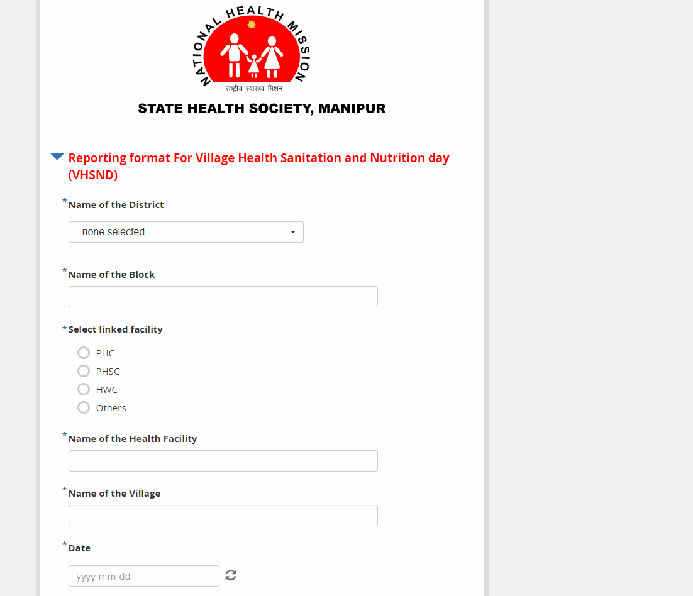

KoboToolbox: Tool developed for Reporting format For Village Health Sanitation and Nutrition day (VHSND) Manipur NHM

This tool has been specifically designed for the Manipur NHM to facilitate the reporting format for Village Health Sanitation and Nutrition Day (VHSND).
It serves the purpose of collecting and analyzing data, and is currently being utilized in Manipur for this purpose. The tool has been developed using KoboToolbox,
and enables live data collection through both an online web link and the offline KoboToolbox app.
KoboToolbox: "Landscape assessment of Primary Healthcare interventions in South-East Asia Region" Developed for WHO

This tool has been developed for the World Health Organization (WHO) for the purpose of conducting a landscape assessment of primary healthcare interventions in the South-East Asia Region.
Currently, the tool is undergoing testing and will be used for data collection in 11 countries within the region. The tool has been created using KoboToolbox, and will facilitate data collection for the
assessment of primary healthcare interventions.
DHIS 2 : SSV(supportive supervision Visit) data Collection by web link and offline app

The SSV (Supportive Supervision Visit) checklist has been developed in DHIS2. As part of my role, I am responsible for maintaining the website, which involves carrying out maintenance tasks,
adding geographies, creating new user accounts, modifying questionnaires, and updating records as needed. In addition, I train new program officers and MER (Monitoring and Evaluation) staff to use DHIS2 effectively.
Through these responsibilities, I have gained expertise in using DHIS2.
Automate Facility Ranking: Input Raw File and Download Analysis Instantly

This tool has been designed specifically for ranking facilities based on various factors such as reporting on NCDs, TB, incentives provided,
and other parameters. The process involves normalizing the data, giving weightage to each parameter, and then calculating the ranking.
The entire process can be time-consuming, which is why this tool has been created to automate it. All you need to do is download the
required raw file from the government portal, upload it to the tool, and download the analysis report. The tool also provides the option
to download scores and other analyses.